Backup and recovery#
Backup and recovery are essential aspects of managing your digital assets safely. When using Concordium wallets, it’s important to know how to backup your wallet information and recover access if needed - for example, when you get a new device or if your device is lost or damaged.
You are solely responsible for keeping your assets secure. Never share your private keys, PIN codes, passwords, recovery phrases, LEDGER devices, or mobile devices with anyone.
Note
You cannot recover testnet wallets on mainnet, or vice versa.
Different Concordium wallet types use different methods for backup and recovery. This page explains the specific procedures for each wallet type.
Desktop Wallet#
To make sure that you have a backup of your accounts, identities, and addresses, Concordium strongly recommends that if you are using Desktop Wallet, you export the data to a file you can store in a safe location. The backup will ensure that you can recover your accounts, identities, and addresses if your Wallet database becomes damaged or if, for some reason, you can’t access the Wallet.
A backup is only necessary when creating new accounts, not every time a transaction is executed.
Backup and Recover Desktop Wallet
Because the Desktop Wallet uses a LEDGER device to sign all transactions, you can more easily recover your wallet and accounts if anything happens to your Desktop Wallet or you cannot access it. To access your Desktop Wallet, you use the backup file that you create in combination with your LEDGER device.
If you lose the backup file with your accounts, you can use the Desktop Wallet in combination with your LEDGER device to recover those accounts. You only have to perform a recovery if you have lost the backup of your accounts and identities. If you still have the backup file, you can import the accounts back into the Desktop Wallet.
If you’ve lost your LEDGER device or the device has stopped working, you can restore the keys in another LEDGER device by restoring it from the recovery phrase used for the original device. As long as you have your recovery phrase available, you can recover your wallet and accounts.
To actually access the recovered accounts, you still need the LEDGER device that was used to set up the accounts, or a new LEDGER device that’s been restored from the same recovery phrase.
Export
Go to Export/Import.
Select Export.
Create a password that contains at least 6 characters. You’ll need the password to import the file into the Desktop Wallet so keep it safe.
Navigate to the location on your computer where you want to save the file. If you’re on Windows, make sure that All Files is selected in Save as type. Give the file a name and the extension .json, and then click Save. Once the export is complete, Concordium recommends that you store the file in a safe location that is different from where you store the Desktop Wallet database.
Import
Go to Export/Import.
Select Import and navigate to the location on your computer where you saved the file, and then select Open.
Enter the password of the import. If the import is successful, you can see all the imported identities, accounts, and addresses in the right pane.
Recover accounts without a backup file
If, for some reason, you’ve lost one or more of your accounts in the Desktop Wallet, and you’ve also lost the backup file, you can use the LEDGER device to recover those accounts.
You only have to perform a recovery if you have lost the backup of your accounts and identities. If you still have the backup file, you can import the accounts back into the Desktop Wallet.
If you’ve lost your LEDGER device or the device has stopped working, you can restore the keys in another LEDGER device by by restoring it from the recovery phrase used for the original device. To learn more about the recovery phrase of a LEDGER device, see LEDGER’s documentation: What is a recovery phrase .
How the recovery process works
When you create a new identity in the Desktop Wallet, a number on the LEDGER device is associated with the identity. This is called the identity index and there can be more identity indices on a LEDGER device. These indices are used sequentially, so the first identity created from a LEDGER device uses index 0, the next uses index 1, and so on.
The LEDGER device stores data about the credentials that belong to an identity. The keys you use to sign account transactions are all attached to credentials. It’s the credentials on an account that determine who’s allowed to sign transactions. To learn more about identities, see Identity framework on Concordium.
Lost identities can’t be recovered because the identity object is not stored on the LEDGER device. However, you can go through each index on the LEDGER device where the data to create credentials are stored and use this information to regain access to the accounts related to a given identity.
For each identity index, the recovery process uses the LEDGER device to calculate the IDs of the credentials, which also have sequential indices. The wallet then checks on the blockchain whether the credentials have been deployed, and which account each credential is attached to. These accounts are then added to the Desktop Wallet along with the deployed credentials.
If all your identity issuances were successful, you can stop the recovery when you encounter an unused index. However, if one of your identity issuance processes failed, this might have caused an index to be skipped. Therefore, you must determine yourself when the recovery is completed.
The recovery also creates placeholders for the missing identities to indicate that the index has already been used. However, the information used to create new accounts and credentials on a missing identity can’t be recovered because it doesn’t exist on the blockchain. That’s why you can’t create new accounts using these placeholders. Instead, you can request a new identity from an identity provider.
The names of the accounts and the notes on the credentials are also not recoverable because they are only saved locally.
Incomplete backups
If you have imported accounts from a backup file and you know there are accounts missing on one or more identities, you can go through the recovery process to recover the missing accounts.
How to recover accounts
In the Desktop Wallet, go to Settings, and then select Recover existing accounts.
Familiarize yourself with the recovery information, and then select Continue.
Connect the LEDGER device to the computer if you haven’t done so already, and then select Submit.
In the Desktop Wallet, there’s a message saying Please allow recovering credentials. The LEDGER device says Recover credentials. In the right pane, you can see the indices that are found, and the accounts, if any, associated with each index.
When you consider the recovery complete, select Stop recovery, I found all my accounts. You then see an overview of all the recovered accounts. If you don’t think the recovery is complete, you can go back and continue the recovery process.
To view the recovered accounts, go to Accounts. A recovered account doesn’t have the name you originally gave it. Instead the name consists of the first eight digits of the account address. Furthermore, because the identities are not recovered, the accounts show the index number that’s associated with the identity and not the identity itself.
To view placeholders for identities, go to Identities. Here you can see placeholders for the missing identities. These placeholders show the index numbers that have been used. You can’t use the placeholders to create new accounts.
Concordium Wallet for Web#
Concordium Wallet for Web uses a seed phrase to recover your accounts, identities, and private keys. The seed phrase is created when you set up a new wallet, and you must write it down and keep it a safe location. You can view the seed phrase in Wallet Settings if you need to write it down again.
If you need to export the private key of a specific account to use in Concordium Client (for example, to work with smart contracts or to set up a validator node), see Export a private key.
Recover Concordium Wallet for Web
After reinstalling the Concordium Wallet for Web, open the extension and click Get started on the welcome page.

Create a six-digit passcode or use a full password. Click Continue.
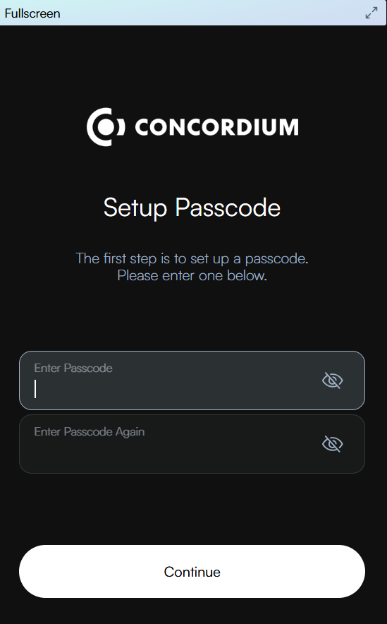Before clicking Restore, make sure that you have chosen the right network for restoring your wallet; Mainnet or Testnet. You must recover your wallet in the network where it was created. You can see the chosen network in the upper right corner. To switch network, click the network name in the upper right corner and select your desired network on the page that opens. Then, go back and click Restore.
 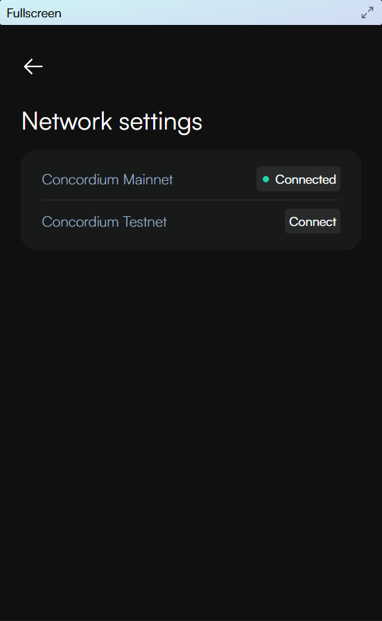
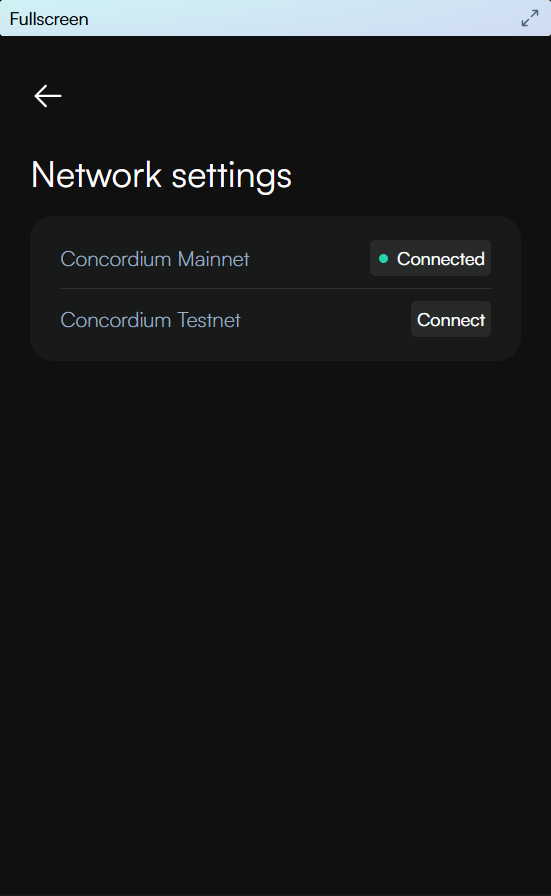
Enter your 24 word seed phrase. Click Continue.
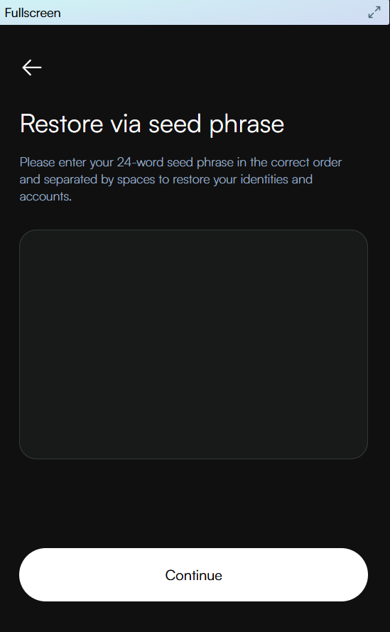After successful restore, you can see which identities and accounts were recovered. Click Continue.
Note
You cannot recover a wallet created in Mainnet in Testnet, and vice versa. Once you have recovered on the correct network, you can switch between Mainnet and Testnet. If you use both networks, you can recover on the other net after setup, through the settings page.
Warning
If you had previously configured your wallet to be able to view selected tokens and you recover your wallet, the tokens will not be recovered. You must add the tokens again to view them in your wallet.
Note
If you forget your passcode for your installed Concordium Wallet for Web, you will need to remove the extension in your internet browser and reinstall it, choosing the option to recover your wallet. Use your seed phrase to recover the wallet.
CryptoX Concordium Wallet#
CryptoX Concordium Wallet supports three ways of recovering your wallet: from seed phrase, backup file, or wallet private key.
If you have set up your wallet with a seed phrase, you will need this for recovering your wallet. You can view and copy the seed phrase in Wallet Settings if you need to write it down again.
If you have restored your wallet from an imported back-up file, you will need this file for recovering your wallet. You can export and import back-up files in Wallet Settings.
If you have restored your wallet from a copy of your wallet private key, you will need this key for recovering your wallet. You can view and copy the wallet private key in Wallet Settings.
Note that the backup functionality available form Wallet Settings will depend on which of the above methods was used for setting up/restoring your wallet.
If you need to export the private key of a specific account to use in Concordium Client (for example, to work with smart contracts or to set up a validator node), see Export a private key.
Recover CryptoX Concordium Wallet
CryptoX Concordium Wallet offers three recovery methods: using a seed phrase, a backup file, or a wallet private key.
For all three methods, start doing this:
After installing or reinstalling the CryptoX Concordium Wallet app, open the app.
On the Welcome screen, read and accept Terms and Conditions and Pricacy Policy by checking the box.
You can also choose to allow activity tracking in the app. This tracking only applies to general usage, not funds, transactions, or personal data.
Tap Get started.
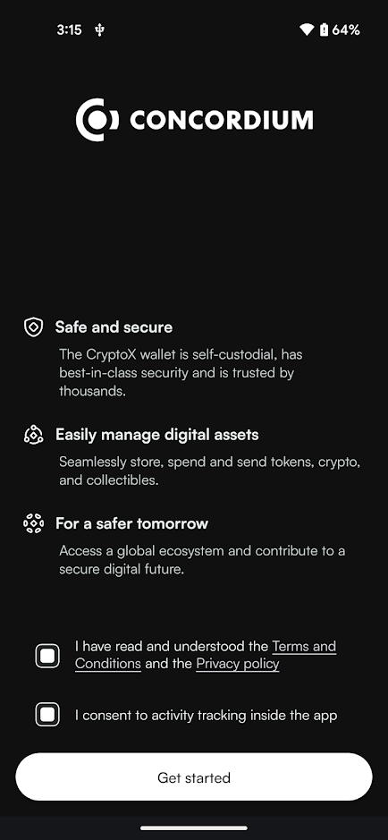Tap Import a wallet.
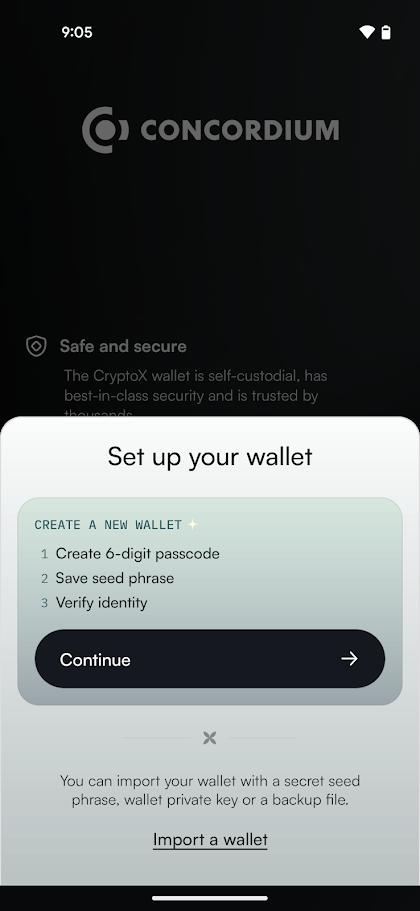Enter and then re-enter a 6-digit passcode for your wallet.
You now have three options: Import via seed phrase, import via wallet private key, or import via backup file.
Tap on the desired option.
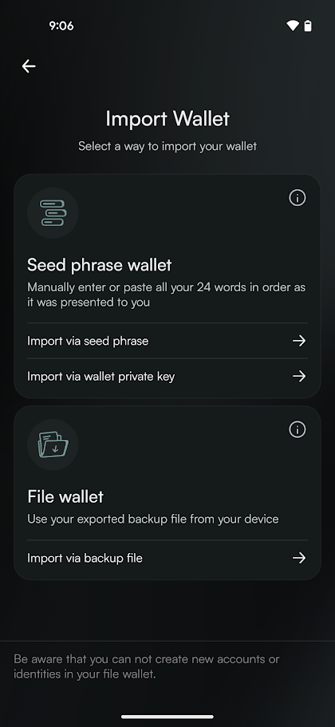
Import via seed phrase
Enter each word of your seed phrase in the correct order. When you start typing, possible words appear for you to select.
If you have a copy of your seed phrase, you can also tap Paste your seed phrase to paste it from your clipboard.
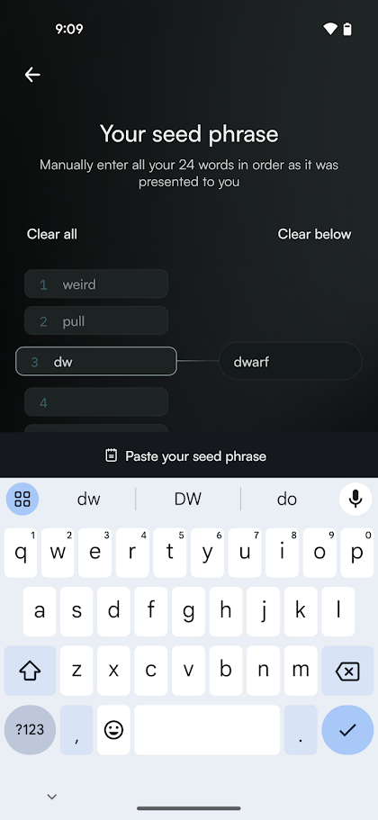Once the words are correct, tap Recover to submit the recovery request to the identity provider(s).
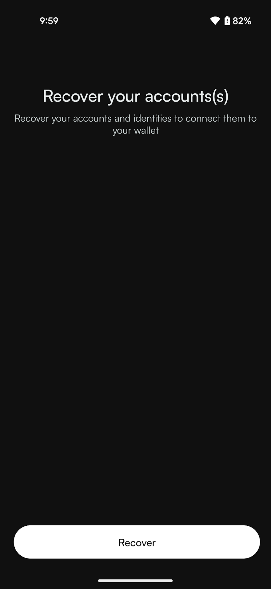It may take a little while for recovery to complete.
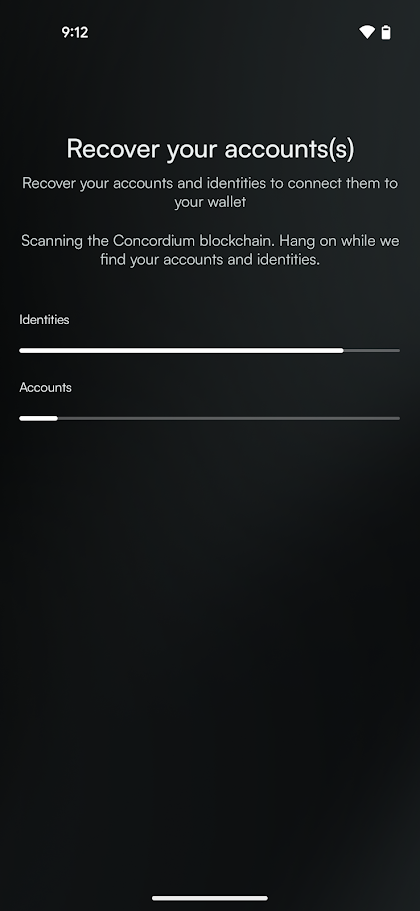After after copletion, you will see an overview of identities and accounts that have been recovered. Tap Continue to Wallet.
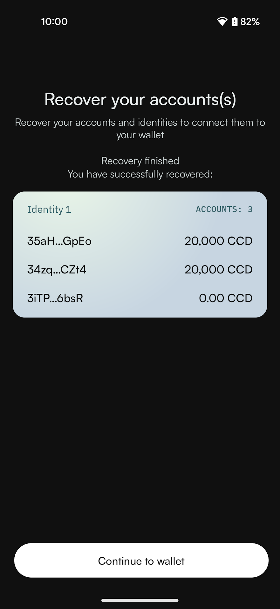You have succesfully restored your wallet.
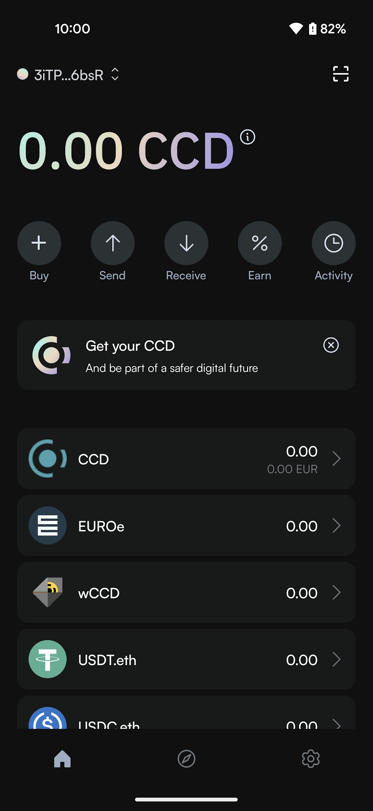
Import via wallet private key
Enter or paste your wallet private key.
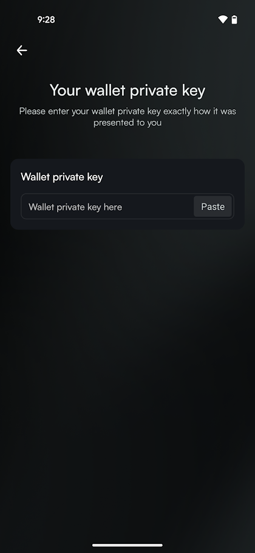Once the key is entered, tap Recover to submit the recovery request to the identity provider(s).
It may take a little while for recovery to complete.
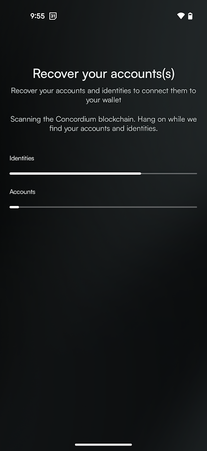After after copletion, you will see an overview of identities and accounts that have been recovered. Tap Continue to Wallet.
You have succesfully restored your wallet.
Import via backup file
Note
When you recover your wallet, any account or identity names that you might have edited will be reset. You can edit the account name, if desired.

{kind=link}
{kind=link}
{kind=link}
{kind=link}
{kind=link}
{kind=link}
{kind=link}
{kind=link}
{kind=link}
{kind=link}
{kind=link}
{kind=link}
{kind=link}
{kind=link}
{kind=link}
{kind=link}